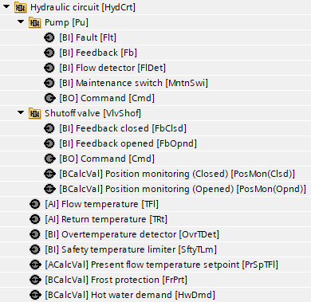
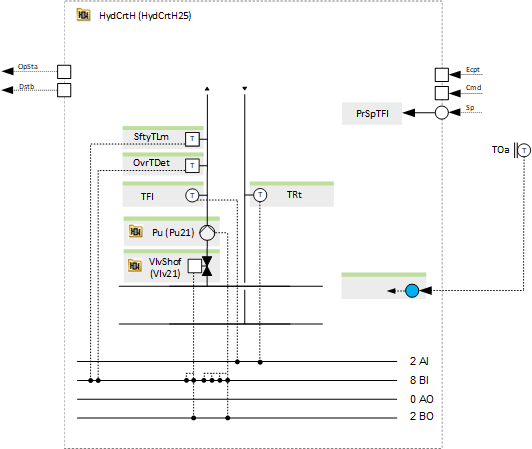
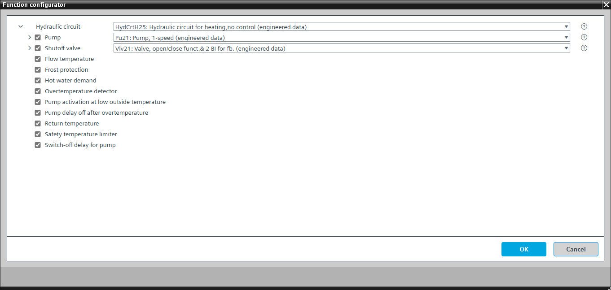

[HydCrtH25] Hydraulic circuit for heating, no control
Program block, name / node subtype: [HydCrtH25] Hydraulic circuit for heating, no control
Library hierarchy: Heating equipment
Family: HydCrtH
Project tree | Diagram |
|---|---|
 |  |
Configurator


Program blocks are stored in the library without I/Os. Use the auto-create and auto-connect functions to create I/Os and/or to connect them to the interface blocks, e.g., R_A, CMD_B. Alternatively, take the I/Os from the folder containing the predefined I/Os in the library and/or from the plant and connect them to the interface blocks.
Function
Opens a shutoff valve and switches on a pump when there is a heating demand.
This program block reads the setpoint value for the flow temperature from the input and displays it on BACnet using a calculated value object. This allows the supply chain hot water coordinator, such as the one in a heating generation plant, to access the setpoint.
This program block does not include temperature control logic.
Optional functions
This program block has the following optional functions:
Option: Pump (1xBO, 4xBI)
Controls a pump (Pu21). Different alternatives are possible, e.g., TwnPu21.
The pump runs when the hydraulic circuit is running, and the optional shutoff valve is open.
Option: Shutoff valve (1xBO, 2xBI)
Controls a shutoff valve that opens when the hydraulic circuit is running (Vlv21).
Option: Hot water demand
Generates a hot water demand and displays it on BACnet with a calculated value object.
Option: Frost protection
Checks if the flow or the return temperature are in alarm due to a low limit violation and generates an alarm with a binary calculated value. It deactivates all limits for the heating controller and activates the hot water demand.
Option: Overtemperature detector (1xBI)
Reads the signal from an overtemperature detector and generates an alarm. The program logic stops the temperature control and closes the valve. If the option "Pump delay after overtemperature" is active, the pump stops with a delay. Otherwise, the pump stops immediately.
Option: Pump activation at low outside temperature
The pump always runs below a certain limit for the outside temperature. This is to increase the frost protection.
Option: Pump delay off after overtemperature
Defines a delay off for the pump after overtemperature (signal from the overtemperature detector or from the safety temperature limiter or from the high limit alarm from the flow or return temperature). The reason for this is that in well-insulated pipes, the pump must run for some time to cool down the water. Otherwise, the plant will be slow to recover from the overtemperature condition.
Remove this option for floor heating or cooling.
Option: Flow temperature (1xAI)
Creates an analog input for the flow temperature and reads its signal. It can generate an alarm (high and low limit).
Option: Return temperature (1xAI)
Creates an analog input for the return temperature and reads its signal. It can generate an alarm (high and low limit).
Option: Safety temperature limiter (1xBI)
Reads the signal from a safety temperature limiter and generates an alarm. The program logic stops the temperature control and closes the valve. If the option "Pump delay after overtemperature" is active, the pump stops with a delay. Otherwise, the pump stops immediately.
Option: Switch-off delay for pump
Defines a switch-off delay for the pump. It is preset to be short and is parameterizable in the program.
Mandatory elements
Name | Description | Type | Alarm / Notification class | Trend / Type | |
|---|---|---|---|---|---|
PrSpTFl | Present flow temperature setpoint | ACalcVal: Analog calculated value | No | No | |
Optional elements
Name | Description | Type | Alarm / Notification class | Trend / Type | |
|---|---|---|---|---|---|
Pu | Pump | N/A | N/A | ||
VlvShof | Shutoff valve | N/A | N/A | ||
SftyTLm | Safety temperature limiter | BI: Binary input | Yes, 5 | No | |
OvrTDet | Overtemperature detector | BI: Binary input | Yes, 4 | No | |
HwDmd | Hot water demand | BCalcVal: Binary calculated value | No | No | |
FrPrt | Frost protection | BCalcVal: Binary calculated value | Yes, 5 | No | |
TFl | Flow temperature | AI: Analog input | Yes, 4 | Yes, 2 | |
TRt | Return temperature | AI: Analog input | Yes, 4 | Yes, 2 | |
Further options
Description |
|---|
Pump activation at low outside temperature |
Pump delay off after overtemperature |
Switch-off delay for pump |